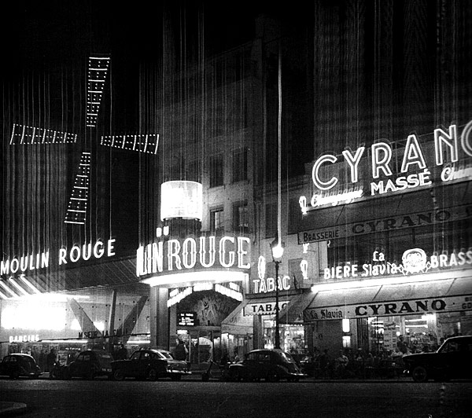

Place Blanche
82 boulevard de Clichy, 18e

Source: Guide du Paris Surréaliste p. 65
Here once stood café Cyrano. Beginning in 1925, after the destruction of passage de l’Opéra and café Certa, café Cyrano became the regular meeting place for the Surrealists. There they drank mandarin curaçao cocktails and shared their findings and planned projects.

rue Puget